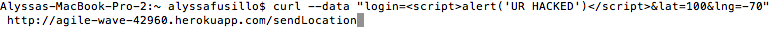
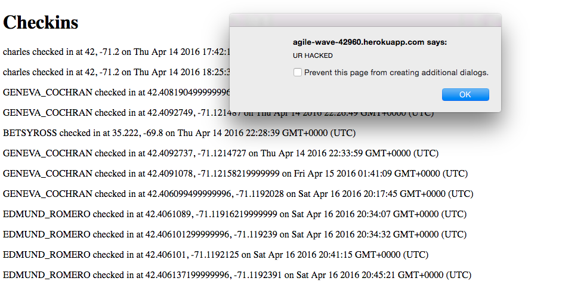
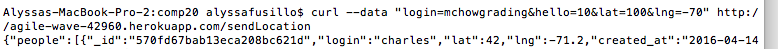
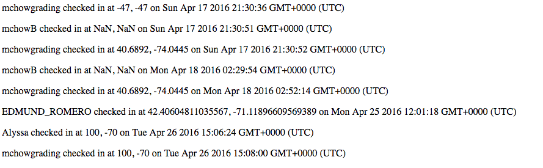
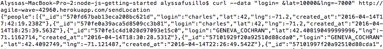
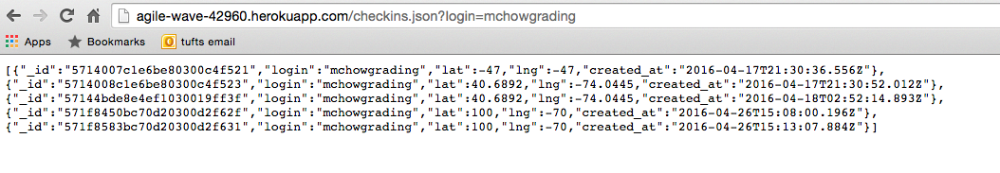

Security and Privacy Assessment of Landmarks
Prepared by Alyssa Fusillo, 4/27/2016
Introduction
In this assignment, I test the security of Mary Skikta's Landmarks web application.
Landmarks is a web application that "maintains location check-ins (login, latitude, and longitude) for a long period of time" and "serves data on the nearest U.S historic landmarks within a mile of where you are". Users can check in and see the closest landmarks to them on a rendered map. Their checkin will display on page that holds all of the latest check-in information for all users.
In this report, I attempt to highlight the vulnerabilities that I find in the web application's privacy and security measures, and I provide possible solutions.
Methodology
I first tested Mary's code with a black-box methodology, performing attacks without reading the source code. Most of my
tests involved curling data using curl --data to the Heroku site.
I then proceeded to obtain the source code from my partner with white-box testing. Viewing her code, I was able to further pinpoint existing vulnerabilities and opportunities to exploit gaps in the security.
I finally analyzed my findings to come up with solutions for these vulnerabilities.
Abstract of Findings
In this assessment, the vulnerabilities that I found stemmed from the assumption that the users will never try to import malicious code of their own, and that all input to the application will be sound and correct. There is too much faith in the user here.
Unfortunately, there are hackers out there that might try to tamper with the code in a malicious manner.
Most of what I found involved hackers being able to inject code into a page, steal the identity of other users, exploit user locations, and
send erroneous data to a page.
There need to be strict constraints on user input so that we can prevent harmful data from being stored. Futhermore, user
identities need to be secured.
Issues found
-
Cross Site Scripting
- Location: POST
/sendLocation and GET
- Severity: HIGH because client-side code can be injected when a user
posts to
/sendLocation . This impacts the experience for other users
who try to then use the site as well. The same data that is stored in POST is accessed
in GET, where the malicious code will be executed.
- I found this issue by curling Javascript code, pictured below, to Mary's POST API.
In my case, I injected code to prompt an alert on the screen. Though this is not the most malicious
of hacks, it proves that many other types of code can be injected, whether it's code that
changes the background of the page to black, rendering it illegible, or tampering with
valuable data of the user. This web application clearly allows for all sorts of user input to be posted, and it
fails to check or sanitize user input.


- Resolution: The solution for this security flaw is really quite simple. The server needs
to sanitize all user input so that they cannot be interpreted as code. For example,
the server could choose to recognize only alphanumerical characters or
only recognize encoded versions of brackets.
-
Stealing Information
- Location: POST
/sendLocation
- Severity: HIGH because this implies that a client can pretend to be somebody
else, taking their username and changing the data (in this case, location) associated
with it
- Description: I went to Mary's checkin page at http://agile-wave-42960.herokuapp.com/ and saw that mchowgrading was one user who had checked in before me. I decided
to assume the identity of mchowgrading, so I made a checkin under this username with a new latitude and longitude.
Sure enough, this went through and showed up on the log of checkins, as pictured below. As assignment 2
uses the most recent checkin under each username, it would render mchowlogin's new (incorrect) location of (100, -70)


- Resolution: this server needs some sort of verification system in place so that logins are authenticated before
a checkin is made. This could be achieved with password protection or other security questions to ensure
that the users are who they say they are.
-
Storage of Erroneous Data
- Location: Post
/sendLocation
- Severity: LOW because it does not directly alter anyone's data, it just falsely
accepts wrong data
- Description: As pictured below, i used curl to post erroneous data to the POST API. The login that I
gave was a blank space, and my lat and lng were within unreasonable bounds that don't even exist. I found that
this went through; my post request went through and this new checkin was displayed on the checkins page.

- Resolution: Though the web application checks to make sure that login, lat, and lng are all
defined, it does not check for other erraneous forms of input or throw error messages. Instead, it stores the
data and tries to use it later. It needs to implement a feature that checks that login, lat, and lng are not only defined but in the proper format and within reasonable bounds. Though this type of injection may not exactly be malicious, it's still important that the web server only accepts well-formatted data so that it doesn't waste space storing faulty data from a confused user or a hacker who is trying to input other forms of malicious data.
-
Injection of Query
- Affects the GET for
/checkins.json
- Severity: HIGH because someone could manually search for another user's checkin data. This may
pose to be a security breach; a user's checkin log could get into the wrong hands.
- Description: I took a look at the code and realized that GET
/checkins.json simply uses request.body.login to find the requested login. Anyone can therefore input anyone else's login to see the latest
checkins of that login. This may be a problem if users want their locations and checkins to be private. As
pictured below, I typed up my own query for a login of mchowgrading in the URL. Sure enough, this worked, and the
server returned all of mchowgrading's latest checkins.

- Resolution: Mary's web application does not take into account that some users may want their checkins to be private.
There should be a verification system in place, similarly to the resolution of the 2nd issue found, to ensure that a users are who
they say they are when they're trying to check in or retreive data about other users. This could very well come
in the form of password protection. Maybe users could provide a list of people who are allowed to view their checkins. I highly doubt that users would want a list of their latest recorded locations to appear for the entire public to view.
Conclusion
Adherence to the suggestions above will help prevent simple yet highly malicious attacks to the Landmarks web application.
User input needs to be sanitized so that code cannot be easily injected
There also needs to be a verification system in place that verifies the user who is checking in or requesting information, using a system
such as password protection.
Without this extra measure, hackers could steal the identity of an innocent user, or hackers can expose locations of users to the public.
I don't believe that the monetary cost for these changes would be very high. I think the real cost would be expending time
and effort in order to provide maximal security for the users. In my opinion, the benefits in this situation would outweigh the costs, since security of the website and of the user's personal data is truly important.